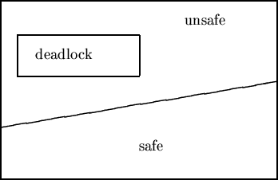
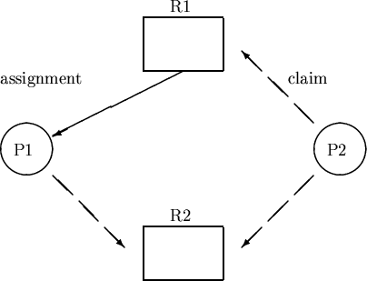

Lecture-21
Operating Systems (CS330)

Safe, Unsafe and Deadlocked States
One way to define safe states is as follows. The worst scenario is that in which each process requests for all the resources that it could possibly ask for. Now if in a state the system can allocate the maximum required resources to all processes in some order (and thus avoid a deadlock), then that state is a safe state. To be more precise let us define the notion of a safe sequence.
Safe Sequences : A sequence of processes
Thus there are 3 instances of the resource currently available.
Suppose, in this state, all three process request for the maximum
number of resources that they are permitted to (5, 2, and 7 respectively).
The system can satisy these requests as follows. First P1 is given
2 instances. Since P1 now has all the resources it needs, it will
ultimately finish and release all its resources. At that stage
the available resources would be 5. Now P0 can be given the resources
it needs. When P0 finishes, there will be 10 resource instances available
using which P2's requirement can be satisfied. Thus,
Suppose that in this state, P2 asks for and is granted one more instance
of the resource. The resulting state would be the following.
Convince yourself that there is no safe sequence for this state, and hence
this state is unsafe. Therefore, the deadlock avoidance algorithm must
not immediately satisfy this most recent request of P2 even though
the requested resource is available.
Let n be the number of processes in the system and
let m be the number of resource types.
The following data structures are mainatained by the Banker's algorithm.
Let X and Y be vectors of length n.
X ≤ Y iff X[i] ≤ Y[i] for all
i from 1 to n.
X < Y iff X ≤ Y and X ≠ Y.
For a matrix A[m,n], Ai denotes the
ith row of A.
For example, allocationi specifies the resources
currently allocated to process Pi.
Overall Algorithm
Let Ri (vector of size m) be the current
request made by Pi.
Let Work and Finish be vectors of length of
length m and n respectively.
The Banker's algorithm handles multiple instances of resource types.
The algorithm has a complexity of O(mn2).
However, if every resource has a single instance, a faster algorithm can be
used (described below).
Introduce a new type of edges called claim edges to the RAG.
A claim edge from Pi to Rj indicates that
process Pi may request resource Rj
at some time in future. Such edges are shown by dashed arrows.
When Pi actually requests resource Rj,
the claim edge is converted to a request edge, and to an allocation edge
on resource assignment. Similarly when a
resource Rj is released by process Pi
the assignment edge is reconverted to a claim edge.
Also, before any process starts executing, all its claim edges must already
be present in the RAG (denoting apriori knowledge of resource requirements
of all processes).
Convince yourself that a state is unsafe if and only if the corresponding
RAG has a cycle. Thus when a process Pi requests
(available) resource Rj, its request is granted only if
on converting the claim edge to assignment edge does not result in the
formation of a cycle in the RAG.
As an example, consider the following RAG.

Deadlock Detection Algorithm
Using a deadlock detection scheme to deal with deadlocks involves
tricky issues with no easy answers. For example, how often should
the deadlock detection algorithm be run? If it is run too frequently,
it would result in a large overhead. On the other hand, deadlocks
that go undetected for large periods of time are clearly undesirable
since they lead to wastage of resources. For recovering from a
deadlock, the only options are: to kill some processes, or to
forcibly take away some resources from some processes. For some
resources, the latter may not be feasible. If one chooses to
kill some processes, the decision may be made on the basis of
process priorities etc.
Since the kernel also executes concurrently on behalf of multiple
processes that share several resources, deadlocks are an area of
concern in kernel design as well. From the point of view of the
kernel, resource requests can be of two kinds: those that are
explicitly made by user processes, such as requests to lock a
file, access a device in exclusive mode etc.; and those that the
kernel code makes on behalf of user processes in order to provide
services to these processes. Examples of the latter include
various kernel locks etc., used by the kernel for synchronization
purposes. Generally, deadlocks caused due to the first kind of
resource requests are considered application responsibility, and
the kernel makes no guarantees that deadlocks will not occur.
Potential deadlocks due to the second kind of resource requests
are, however, clearly the responsibility of the kernel, and the
kernel code must ensure that such deadlocks do not occur.
Usually, some deadlock prevention techniques are used to ensure
this.
A state is safe if and only if there is a safe sequence for that state.
If no such sequence exists then that state is said to be unsafe.
Consider the following example. Assume that the system has
12 instances of a single resource type. Assume that the
maximum resource requirements and current allocations for different processes
is as shown in the table below.
Process Max Requirement Current Allocation P0 10 5 P1 4 2 P2 9 2
Process Max Requirement Current Allocation P0 10 5 P1 4 2 P2 9 3
Banker's Algorithm
We have already seen the basic ideas behind the Banker's algorithm above.
We now state the algorithm more formally. Essentially, when a request
is made, the state that would result if the request is granted is computed
and checked for safety. The request is granted only if the resulting state
is safe.
We now introduce some notation for ease of exposition.
Safety Algorithm
allocationi =
allocationi +
Ri;
If the computed state is safe (see safety algorithm below), grant the request
else make Pi wait and undo changes to the state.
availablei =
availablei -
Ri;
needi =
needi -
Ri ;
Note that due to the monotonically increasing value of the vector
Work, we do not need any backtracking in the algorithm.
Work = available;
For i from 1 to n, Finish[i] = false;
goto step 2.
Deadlock Avoidance using Resource Allocation Graph
If the system has only one instance of each resource type,
a more efficient algorithm that uses a variant of the
RAG can be used for deadlock avoidance.
Deadlock Detection and Recovery
If a system neither employs deadlock prevention nor deadlock avoidance,
a deadlock may occur. In this case, the only possible way to deal with
a deadlock is to detect it after it has occurred and try to recover
from it. Here is a deadlock detection algorithm. Note that the
deadlock detection algorithm is similar to the Banker's algorithm
except that it works with the current resource requests of each
process (Ri) instead of its maximum possible request
(needi).
The complexity of this deadlock detection algorithm is again
O(mn2). Again, if there is only one
instance of every resource, a simpler algorithm can be used ---
a state is deadlocked if and only if the corresponding RAG
(without the claim edges) has a cycle.
Deadlock Recovery
Work = available;
For all i from 1 to n, Finish[i] =
(allocationi == 0 );
goto step 2
Deadlock Handling in Practice
In practice, deadlock avoidance has too high a runtime overhead
to be practical. Deadlock detection, besides being expensive,
has other practical problems mentioned above. Deadlock prevention,
therefore, is the most practical approach to handling deadlocks.